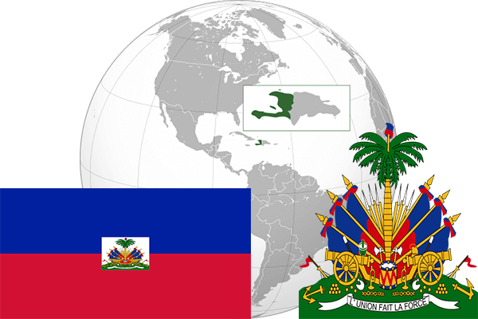

To`liq nomi: Gaiti Respublikasi
Region: Markaziy Amerika
Qonunchilik shakli: Respublika
Mustaqillik kuni: 1-yanvar 1825-yil (Fransiyadan)
Poytaxt: Port-o-Prens
Maydoni: 27 750 km² (dunyoda 143 -o`rinda )
Chegaradosh davlatlari: Dominika Respublikasi
Aholisi: 9 893 934 (dunyoda 88 - o`rinda, 2013 -yil roʻyxat)
Aholi zichligi: 328/km²
Aholining o`rtacha yoshi: 57,1 yil (58,8 ayollar, 55,4 erkaklar)
Rasmiy tili: gaiti va fransuz tili
Dini: 80% katolik, 16% protestant
Pul birligi: gurd
Telefon prefiksi: +509
Internet domen: .ht
Xalqaro tashkilotlarga a`zoligi: BMT (1945 – yildan)
Dengiz va okeanlarga chiqishi: Karib dengizi
YIM: Butun: $ 12,942 mlrd Jon boshiga $ 1242 (2008 - yil roʻyxati)
Yirik shaharlari: Port-o-Prens, Karfur